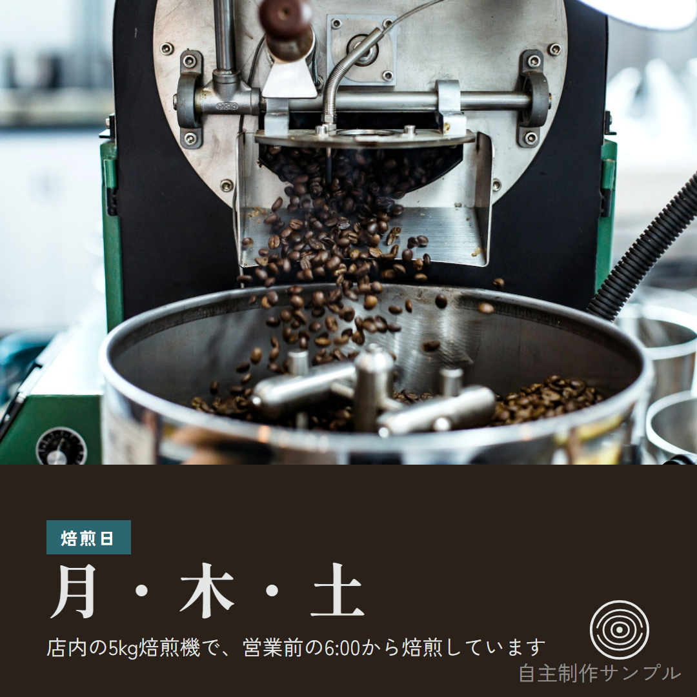
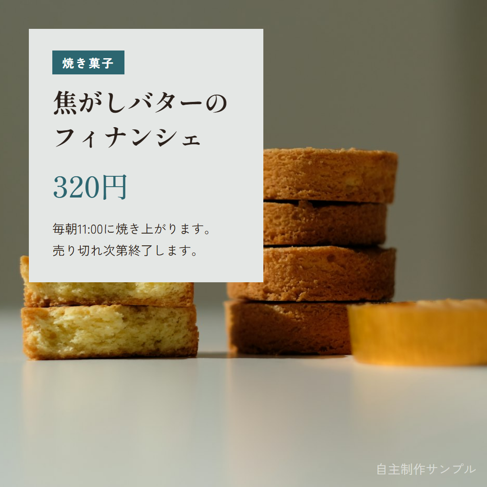
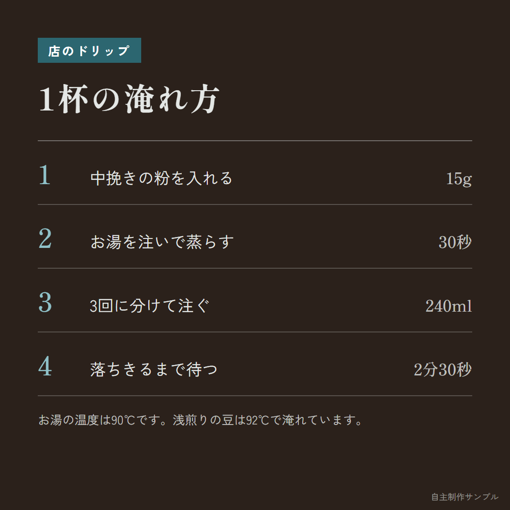
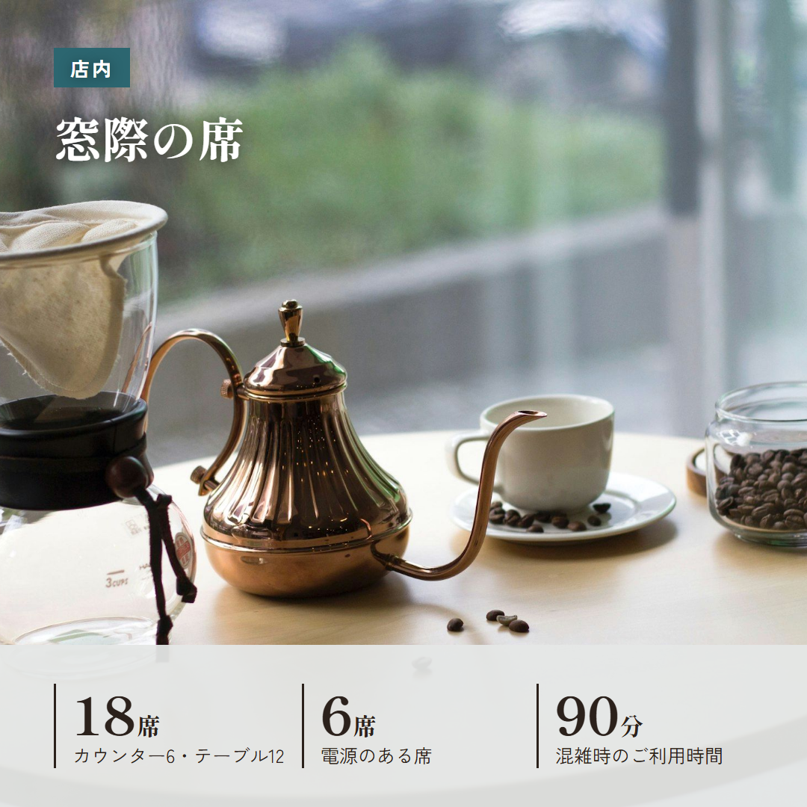
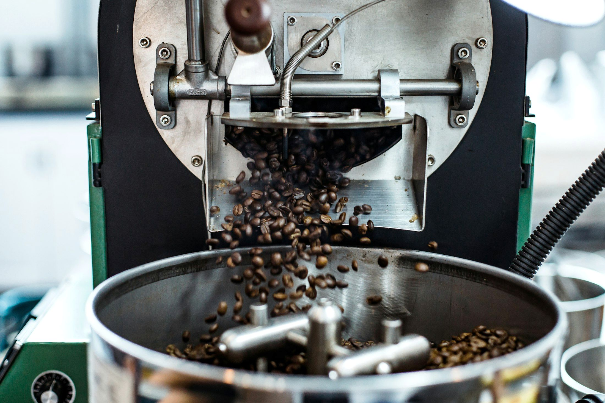
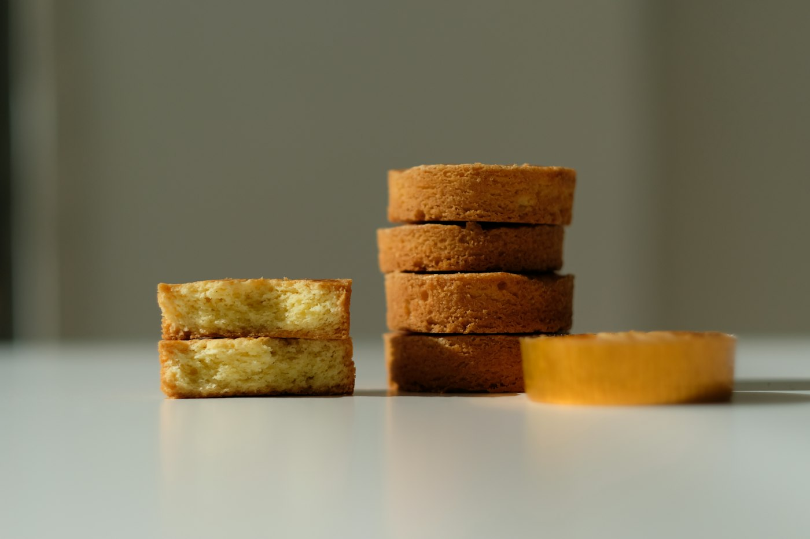

投稿画像
プロフィール画面の一覧と同じ並びで6枚を置いています。写真は Unsplash License に基づき使用しています。







投稿の中身
1枚ごとに載せる情報を決め、作り方をそろえています。
posts/post-01.png
焙煎日（月・木・土）
写真の下に毎週変わらない情報を大きく置く
posts/post-02.png
今週の豆
銘柄・焙煎度・産地・精製・価格を表にする
posts/post-03.png
焼き菓子
写真を全面に使い品名・価格・焼き上がり時刻だけを載せる
posts/post-04.png
1杯の淹れ方
保存される投稿として分量を4手順で示す
posts/post-05.png
店内
席数・電源のある席・利用時間を数字で示す
posts/post-06.png
営業案内
営業時間・定休日・アクセスを1枚にまとめる
配色と書体は店のホームページ（P01）と同じにしています（ステンレス #E4E7E5・焦げ茶 #2B211B・焙煎機の緑 #2C6670、Shippori Mincho B1・Zen Kaku Gothic New）。画像は posts/posts.html から書き出しています。文字や価格を変える場合はHTMLを直して書き出し直します。
素材写真
投稿画像に使っている実写真です。出典は credits.md にまとめています。


キャプション
6投稿分を captions.md に載せています。1投稿の文は事実だけにし、ハッシュタグは5個までにしています。
1週間分の投稿カレンダー
2026年11月30日から12月6日までの予定です。ファイルは calendar.xlsx（「投稿カレンダー」「方針」の2シート）です。
| 日付 | 時刻 | 種類 | 投稿 |
|---|---|---|---|
| 11/30（月） | 7:30 | フィード | post-01 焙煎日 |
| 11/30（月） | 15:00 | ストーリーズ | 焙煎したての豆 |
| 12/1（火） | 12:00 | フィード（予約投稿） | post-02 今週の豆 |
| 12/2（水） | 10:30 | フィード | post-03 焼き菓子 |
| 12/2（水） | 11:05 | ストーリーズ | 焼き上がり（15秒の動画） |
| 12/3（木） | 19:00 | フィード | post-04 1杯の淹れ方 |
| 12/4（金） | 12:00 | フィード | post-05 店内 |
| 12/5（土） | 8:00 | フィード | post-06 営業案内 |
| 12/6（日） | 9:00 | ストーリーズ | 今週の投稿をハイライトに追加 |
応募時の紹介文
架空のカフェのInstagram投稿画像6枚とキャプション、1週間分の投稿カレンダーの自主制作サンプルです店のホームページと配色・書体をそろえ、価格・時刻・席数などの具体的な情報を1枚ずつ大きく載せていますカレンダーには投稿の時刻・種類・素材を決めてあり、定休日は予約投稿で回す運用まで書いています